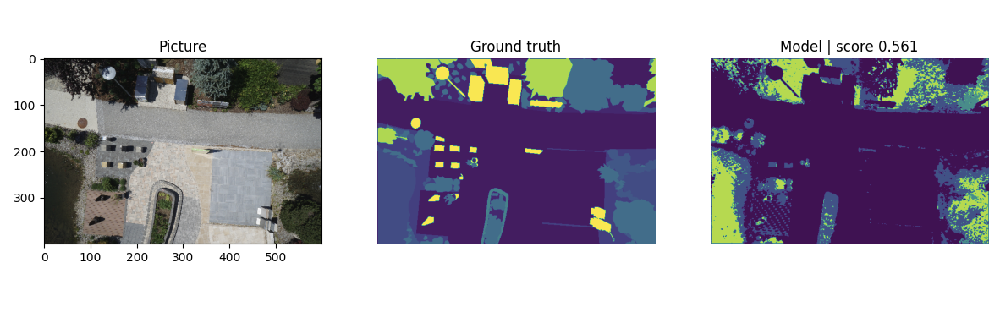

Image Segmentation - Single Layer Model
Back to : deep-learning-study
이번 포스팅에서는 구현이 어떤 식으로 동작해야 하는지를 대충 알아보기 위해, 생각할 수 있는 가장 단순한 모델인 1-layer convolution을 이용해 semantic segmentation을 시도합니다.
Preparation post 에서 이어집니다.
Model 만들기
Pytorch에서 model은 torch.nn.Module 형태의 클래스로 만들 수 있습니다.
# models/single_conv.py
import torch.nn as nn
class SingleConvolution(nn.Module):
def __init__(self):
super(SingleConvolution, self).__init__()
self.conv_layer1 = nn.Sequential (
nn.Conv2d(3, 23, kernel_size = 3, padding=1),
nn.ReLU()
)
def forward(self, x):
output = self.conv_layer1(x)
return output
우리는 RGB 3개 채널을 갖는 이미지를 받아서, 23개 클래스 중 하나를 구분할 것입니다. 즉, 입력은 $3 \times W \times H$ 형태일 것이며, 출력은 각 $(i, j)$ 마다 23개의 클래스에 대한 probability를 출력해야 합니다. ($23 \times W \times H$)
우리가 생각할 수 있는 가장 간단한 형태의 모델은 단 한 번의 convolution layer로 구성된 모델일 것입니다. 이 모델은 $3 \times f \times f$ 크기의 convolution filter 23개가 각 클래스에 대응하며, 각 filter는 trainable weight과 bias를 갖습니다. 즉 파라미터는 여기서 $27 \times 23$개의 weight과 23개의 bias로 총 644개가 됩니다. 각 클래스의 확률값은 convolution연산과 ReLU 한번으로 바로 결과값이 도출됩니다.
이 모델을 정의하는 것까지를 코드로 옮기면 다음과 같습니다.
# main.py
from basics import *
from datautils import *
from metrics import *
from evaluate import *
from train import *
from models import *
batch_size = 6
train_set, test_set = import_drone_dataset()
train_loader = DataLoader(train_set, batch_size=batch_size, shuffle=True)
model = SingleConvolution().to(device)
print(summary(model, (3, 600, 400)))
여기서 batch size는 GPU 메모리에 들어가는 한 많이 욱여넣는 것이 일반적입니다. 저는 1070Ti를 쓰기 때문에 6정도는 괜찮은것 같습니다. 다른 함수들은 앞서 Prep에서 준비한 함수들입니다. summary가 반환하는 결과가 아래와 같이 나타납니다.
----------------------------------------------------------------
Layer (type) Output Shape Param #
================================================================
Conv2d-1 [-1, 23, 600, 400] 644
ReLU-2 [-1, 23, 600, 400] 0
================================================================
Total params: 644
Trainable params: 644
Non-trainable params: 0
----------------------------------------------------------------
Input size (MB): 2.75
Forward/backward pass size (MB): 84.23
Params size (MB): 0.00
Estimated Total Size (MB): 86.98
----------------------------------------------------------------
우리가 예상했던 대로 644개의 trainable param을 갖는 것을 볼 수 있습니다.
Training
이제 모델을 정의했다면, 이 모델의 633개의 parameter를 실제로 train해 줘야 합니다. Train은 크게 두 과정으로 이루어집니다.
- Forward pass로 훈련용 데이터를 먹여서, 최종 결과를 도출한 다음, 이 결과를 ground truth와 비교해서 얼마나 다른지 (loss function)의 값을 측정
- 그 값을 최소화하는 방향으로 뭔가 optimization 알고리즘을 적용.
전체적인 CNN 모델 훈련의 이론에 대해서 다룬 포스팅들과, LeNet을 이용해서 pytorch에서 classification 하는 포스팅 (LeNet으로 MNIST 풀어보기)가 있으므로 이쪽을 참고해 주세요.
여기서의 훈련과정은 LeNet MNIST훈련과 크게 다르지 않습니다.
# train.py
from basics import *
from metrics import *
def train(
model : nn.Module,
epochs : int,
train_loader : DataLoader,
loss_func, optimizer,
acc_metric = pixel_accuracy
):
torch.cuda.empty_cache()
train_losses = []
train_acc = []
model.to(device)
start = time.time()
for _ in range(epochs):
print(f"EPOCH {_+1} training begins...")
train_start = time.time()
model.train()
train_accuracy = 0
train_loss = 0
for i, data in enumerate(tqdm(train_loader)):
img, mask = data
img = img.to(device)
mask = mask.to(device)
output = model(img)
train_accuracy += acc_metric(output, mask)
loss = loss_func(output, mask)
train_loss += loss.item()
loss.backward()
optimizer.step()
optimizer.zero_grad()
print(f"Train epoch {_+1} / {epochs}",
f"Training Loss {train_loss/len(train_loader):.4f}",
f"Training Accr {train_accuracy/len(train_loader):.4f}",
f"Training Time {(time.time()-train_start)/60:.2f} min")
history = {'train_loss' : train_losses, 'train_acc' :train_acc}
print(f"Total training time {(time.time()-start)/60:.2f} minutes taken")
return history
LeNet으로 MNIST 풀어보는 포스팅에서 다뤘던 것과 거의 같습니다. 여러 모델에 대해 실험하기 위해 함수로 만들었다는 정도만 차이가 있습니다. 달라지는 부분이 거의 없으므로, LeNet 포스팅을 참조해 주세요.
- train data를 로딩할 data loader를 받고
- 몇 epoch 돌릴지를 파라미터로 받고
- 어떤 loss function을 어떤 optimizer로 훈련하고
- 어떤 방법으로 accuracy를 측정할지 (사실 훈련 자체에는 상관이 없는데, 눈으로 보기 위해서입니다) 정합니다.
이제, 마지막으로 이 모두를 합쳐서 최종 로직을 작성합니다.
# main.py
train(
model = model,
epochs = 5,
train_loader = train_loader,
loss_func = nn.CrossEntropyLoss(),
optimizer = torch.optim.Adam(model.parameters(), lr=0.003)
)
evaluator = ModelEvaluation(model, test_set, pixel_accuracy)
evaluator.evaluate_all()
이 모델에 뭔가 노력을 기울이는 것은 의미가 없으므로, 아무렇게나 5 epoch를 돌립니다. loss function과 optimizer도 일반적인 Cross Entropy Loss 와 Adam을 그대로 집어넣습니다. 이렇게 좀 기다려 보면…
Results

이 결과는 8번 이미지에 대한 결과입니다. 모델이 대부분을 void로 잡아내긴 했는데, 뭔가 이미지의 큰 청크들에 대해 분명 trivial하지 않게 뭔가를 잡아낸 것 같아 보입니다.
이는 show_qualitative로 뽑은 결과인데, evaluate한 결과는 평균 pixel accuracy 47%정도가 나왔습니다. 이 프로젝트는 앞으로 다양한 방법을 이용해 이를 85% 내지는 그 이상으로 올릴 계획입니다.
Back to : deep-learning-study